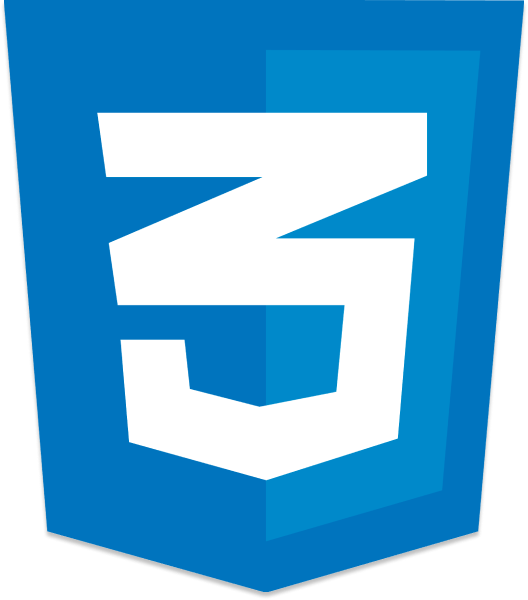
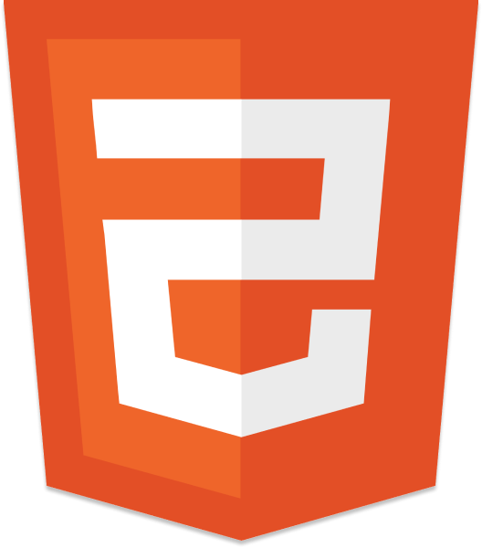
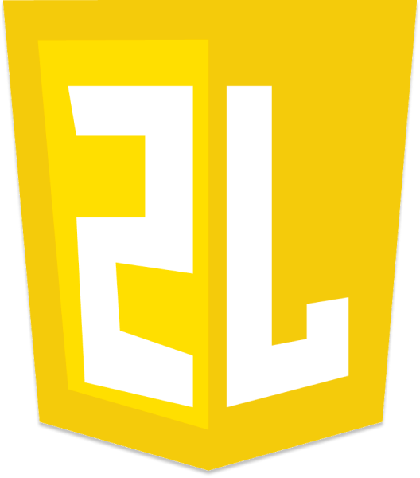

Desenvolvedor;
- 
- 
- 
Front End & UX/UI Designer.
Nascido e criado no Rio de Janeiro
Nascido e criado no Rio de Janeiro
Já fiz e vendi projetos de Introduções, Modelagem (nível médio) e Logos com ótimas qualidades, algumas até postadas no Youtube.
Mexo com manipulação de imagens, artes digitais, logos e criação de uniformes sendo sob medida e até improvisos quando permitido.
Assim como fiz vendas no C4D (Cinema 4D) eu também vendi projetos de introduções e logo animadas, tanto em 2D como 3D.
Nada muito profissional, apenas o básico para a edição de música e encrementos de instrumentos e a manipulação com o mesmo.
Não tive o sucesso esperado com Lumion, foram poucos projetos por conta do software ser pesado demais pro meu computador.
Pude iniciar meus estudos em programação e desde então, aprimora-los com cursos, leituras em fóruns, livros, ebooks e com pesquisas no próprio Youtube.
Meus estudos no Ensino médio não foram dos melhores por inúmeros motivos, sem contar a Pandemia que tirou meu 2° e 3° ano, mas continuei com notas acima da média.
Na Origamid, pude ter uma ampla visão de HTML, CSS e UX & Ui Designer, pretendo terminar todos os cursos, e logo logo, aprimorar mais ainda esse meu site pra portfólio.
No curso de Algarítmo, pude girar uma chave muito importante na minha mente sobre a lógica de programação, com o passar do tempo, estarei implementando e terminando mais cursos.
Nesse estágio, pude aprimorar meus comportamentos formais, sendo atendente geral, preenchendo o banco de dados, mexendo e lendo com processos digitais ou físicos.
em breve
em breve
em breve
em breve
em breve
em breve